Ribbon sizes and spacing
Separate comparisons using WordCraft’s own synthetic renders and icon drawings. Open any picture, then press ← and → to flip between before and after.
Click any picture to open it large; Esc or a click outside closes it, the arrow keys move between pictures, and clicking the large picture shows its actual size. Red boxes mark what changed, with nearby changes grouped; an arrow points to the change when it is small in a big screenshot.
Home at 1440 points
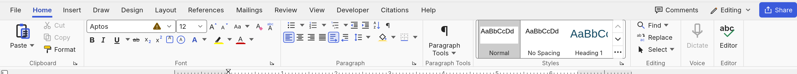
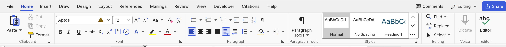
Home at 1280 points
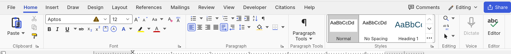
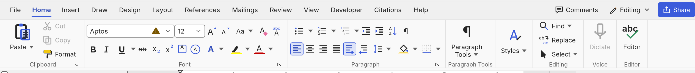
Home at 1920 points
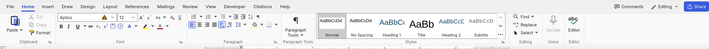
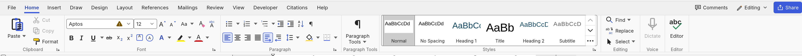
Clipboard, Font and Paragraph
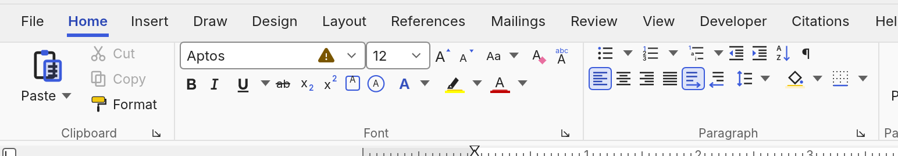
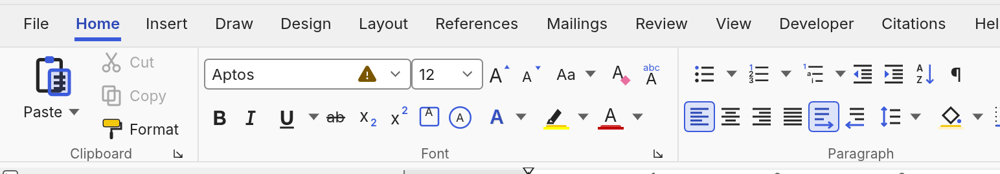
Shape Format
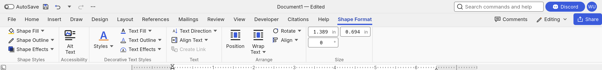
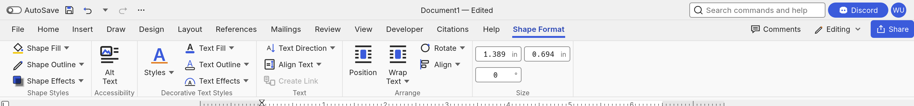
Table Layout
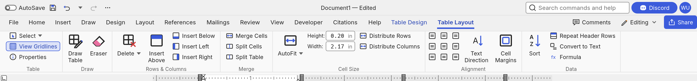
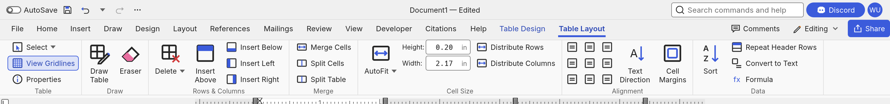
Diagram Design
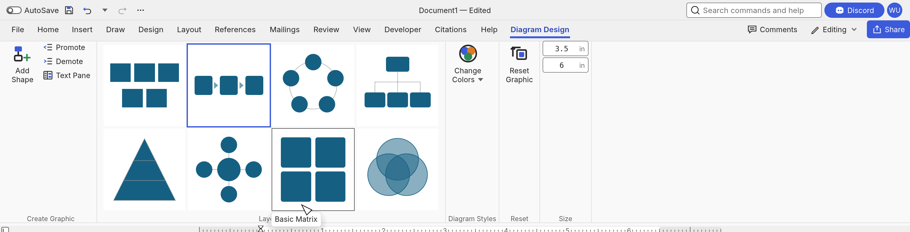
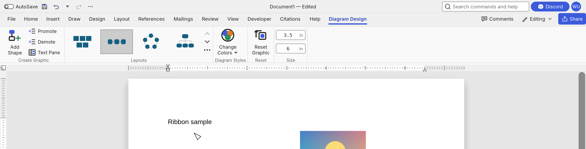